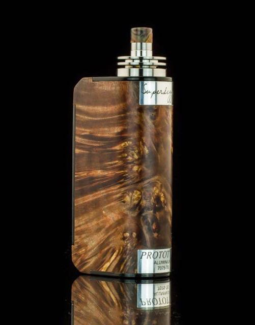
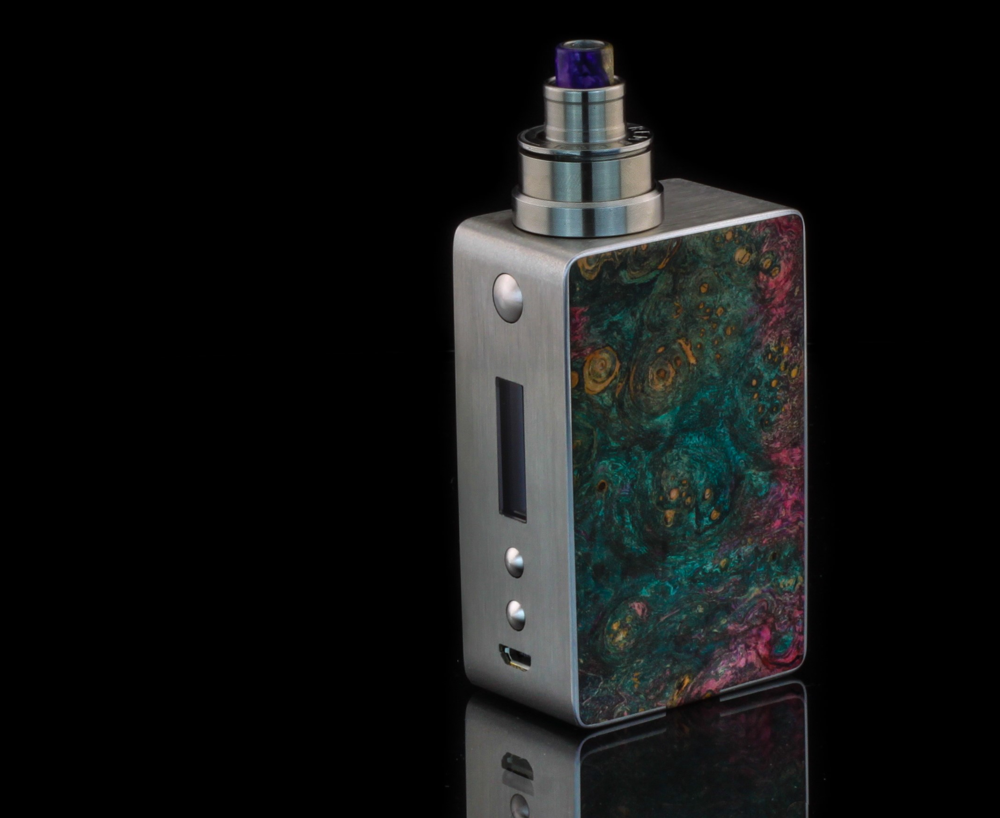
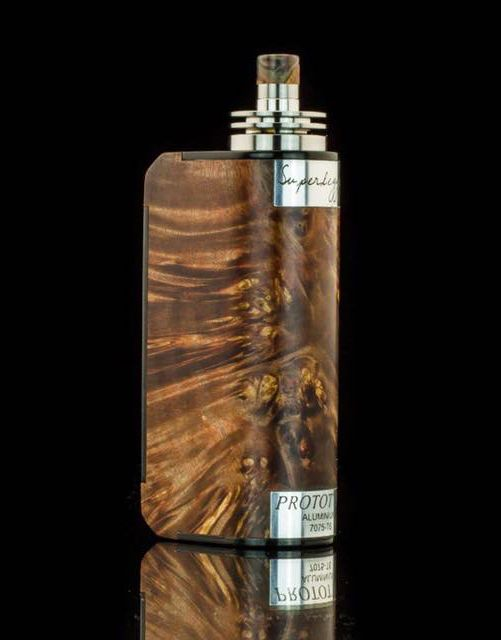
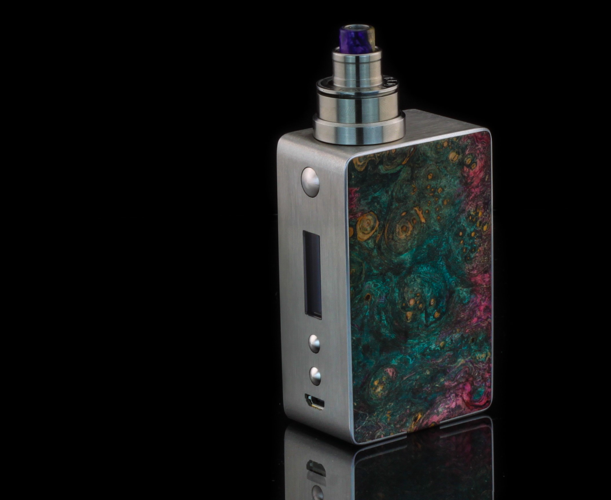

Shop here now!

 



E-cigarettes heat nicotine (extracted from tobacco), flavorings and other chemicals to create an aerosol that you inhale. Regular tobacco cigarettes contain 7,000 chemicals, many of which are toxic. While we don’t know exactly what chemicals are in e-cigarettes, Blaha says “there’s almost no doubt that they expose you to fewer toxic chemicals than traditional cigarettes.”
An electronic cigarette is an electronic device that simulates tobacco smoking. It consists of an atomizer, a power source such as a battery, and a container such as a cartridge or tank. Instead of cigarette smoke, the user inhales vapor, so using an e-cigarette is called "vaping".The atomizer is a heating element that atomizes a liquid solution called e-liquid. E-cigarettes are activated by taking a puff or pressing a button. Some look like traditional cigarettes. Most versions are reusable.
Available in:
- Jakarta
- Bogor
- Bekasi